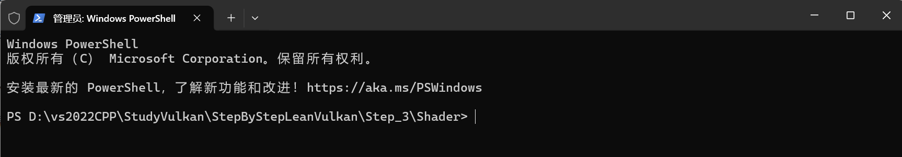

渲染管线状态对象（Pipeline State Object, PSO）在Vulkan中是一个极为重要的概念。它将渲染阶段的配置固定下来，方便重用并减少状态改变的开销。创建PSO需要通过一系列的VkPipeline*Info结构体配置各种管线状态，包括但不限于输入装配、视口、裁剪、多边形模式、深度/模板测试、颜色混合等。
渲染通道RenderPass和渲染管线GraphicsPipeline两个概念在Vulkan实际图像渲染过程中十分重要的概念，正确理解这两个概念对于以后设计Vulkan类型的应用程序十分重要，作者在参阅多篇文章后是这样理解这两个概念的。
渲染管线GraphicsPipeline只是应用程序设计的固定的通用的机器流水线，内部并没有包含需要渲染的数据对象(如顶点数据、纹理等)； 渲染通道RenderPass是应用程序针对特定的数据对象和中间渲染结果(各种Buffer)而设计的实际渲染过程；
渲染管线GraphicsPipeline只有绑定实际的渲染通道RenderPass对象才能够完成渲染计算过程，而渲染通道RenderPass对象在设计完成后也只有依赖某个渲染管线GraphicsPipeline才能够实际渲染到VkImage对象上(实际呈现到屏幕VkSurface对象上）。
Vulkan实际程序开发过程中理解渲染通道RenderPass和渲染管线GraphicsPipeline两个概念，学会正确设计通道RenderPass和渲染管线GraphicsPipeline十分重要，本节我们以概念加实际程序设计的方式描述这两个概念。
渲染管线可以看作是一条生产流水线，定义了从输入顶点到输出图像的所有步骤，它包括一系列固定和可编程阶段，这些阶段按照顺序执行，以完成渲染任务。熟悉OpenGL编程的同学基本熟悉OpenGL绘制图元的基本流程：
① 顶点输入阶段：
顶点输入从CPU-->GPU，顶点数据用来为后面的顶点着色器等阶段提供处理的数据。是渲染管线的数据主要来源。送入到渲染管线的数据包括顶点坐标、纹理坐标、顶点法线和顶点颜色等顶点属性。 为了使得程序设计结构清晰，我们这里设计的GraphicsPipeline对象，启用动态顶点输入功能，顶点输入部分放在命令缓冲区部分。这里仅仅讲述顶点输入的作用和程序设计方法，该部分代码进行屏蔽。
顶点输入阶段需要配置顶点绑定描述符(VkVertexInputBindingDescription 描述顶点缓存区的布局)和顶点属性描述符(VkVertexInputAttributeDescription 描述顶点数据的格式和偏移量)。下面代码不要添加到工程代码中，只是供阅读使用。
x1// 定义顶点输入绑定描述符，描述顶点的布局2VkVertexInputBindingDescription vertex_input_bindings{3.binding = 0, // 绑定索引，指定顶点数据绑定的槽位(索引)4.stride = 8 * sizeof(float), // 每个顶点的数据跨度，即每个顶点数据的字节大小（8个float：3个float顶点坐标，2个float纹理坐标，3float个法向量）5.inputRate = VK_VERTEX_INPUT_RATE_VERTEX, // 指定输入率为每个顶点（每个顶点都有一组数据）6};7//定义顶点输入属性描述符数组，指定每个顶点属性的格式个偏移量9VkVertexInputAttributeDescription vertex_input_attributes[3]{10{11.location = 0, // 输入属性的位置，匹配顶点着色器中的输入变量12.binding = 0, // 顶点绑定索引，指定此属性从哪个绑定中获取数据13.format = VK_FORMAT_R32G32B32_SFLOAT, // 属性的数据格式，这里是3个float（X, Y, Z坐标）14.offset = 0, // 数据在顶点中的偏移量，这里从第0个字节开始15},16{17.location = 1, // 第二个输入属性的位置，通常用于纹理坐标18.binding = 0, // 绑定索引，仍然是从同一个绑定中获取数据19.format = VK_FORMAT_R32G32_SFLOAT, // 属性的数据格式，这里是2个float（纹理坐标U, V）20.offset = sizeof(float) * 3, // 数据在顶点中的偏移量，这里从第3个float开始（跳过XYZ坐标）21},22{23.location = 2, // 第三个输入属性的位置24.binding = 0, // 绑定索引25.format = VK_FORMAT_R32G32B32_SFLOAT, // 属性的数据格式，这里是3个float（X, Y, Z坐标）26.offset = sizeof(float) * 5, // 数据在顶点中的偏移量，这里从第5个float开始27},28};29// 创建并初始化 VkPipelineVertexInputStateCreateInfo 结构体31VkPipelineVertexInputStateCreateInfo vertexInputInfo{32.sType = VK_STRUCTURE_TYPE_PIPELINE_VERTEX_INPUT_STATE_CREATE_INFO, // 指定结构体类型33.pNext = nullptr, // 指定扩展指针（通常为nullptr）34.vertexBindingDescriptionCount = 1, // 顶点绑定描述符的数量35.pVertexBindingDescriptions = &vertex_input_bindings, // 指向顶点绑定描述符的指针36.vertexAttributeDescriptionCount = 3, // 顶点属性描述符的数量37.pVertexAttributeDescriptions = vertex_input_attributes, // 指向顶点属性描述符数组的指针38};
注意: 顶点着色器脚本中的 location 顶点和输入属性描述符的 location 属性一一对应 例如：
xxxxxxxxxx111#version 4002layout (location = 0) in vec4 pos;//顶点坐标3layout (location = 1) in vec2 attr;//纹理坐标4layout (location = 2) in vec3 normal;//顶点法向量5layout (location = 0) out vec2 texcoord;7void main() {9texcoord = attr;10gl_Position = pos;11}
② 输入装配阶段 VkPipelineInputAssemblyStateCreateInfo
为了让Vulkan明白顶点数据构成的是什么图元，我们需要在绘制指令中传递相对应的图元信息。常见的图元包括：点(GL_POINTS)、线(GL_LINES)、线条(GL_LINE_STRIP)、三角面(GL_TRIANGLES)。输入装配阶段将顶点数据组装成几何图元(比如点、线、三角形)。这是顶点着色器之前的最后一个阶段，定义了如何将顶点数据组合成图形基元。
VkPipelineInputAssemblyStateCreateInfo 是用于指定输入装配阶段(Input Assembly`)配置的结构体，用于将顶点数据组装成图元(如点、线、三角形)，这些图元会被后续的管线阶段处理
xxxxxxxxxx71typedef struct VkPipelineInputAssemblyStateCreateInfo {2VkStructureType sType;// 结构体类型3const void* pNext; // 扩展属性, 属性通常为nullptr4VkPipelineInputAssemblyStateCreateFlags flags; //保留字段, 当前必须为 05VkPrimitiveTopology topology;// 图元拓扑类型(三角形，线，和点)6VkBool32 primitiveRestartEnable;// 图元重启功能7} VkPipelineInputAssemblyStateCreateInfo;
其中的 VkPrimitiveTopology topology 定义了图元拓扑类型，比较常用，用于控制图元类型(如点、线、三角形)
◆ VK_PRIMITIVE_TOPOLOGY_POINT_LIST 每个输入的顶点位置表示一个点图元，对应触发的顶点索引为 i
◆ VK_PRIMITIVE_TOPOLOGY_LINE_LIST 每两个输入顶点构成一条直线，对应触发顶点索引为 2i
◆ VK_PRIMITIVE_TOPOLOGY_LINE_STRIP 每个顶点自身和前一个顶点之间构成一条直线，对应触发顶点索引为 i
◆ VK_PRIMITIVE_TOPOLOGY_TRIANGLE_LIST 每三个顶点构成一个填充三角形，对应触发顶点索引为 3i
◆ VK_PRIMITIVE_TOPOLOGY_TRIANGLE_STRIP 每个顶点和之前的两个顶点一起构成一个填充三角形，对应触发索引顶点为 i
这部分内容与OpenGL绘制不同类型的图元形式基本一致，我们将会在以后的图元绘制过程中详细面熟。
③ 顶点着色器阶段
开发者编写顶点着色器程序来定义每个顶点的处理逻辑，该阶段是必须启用的，是管线中唯一一个必不可少的阶段。 顶点着色器主要功能是进行坐标变换。将输入的局部坐标变换到世界坐标、观察坐标和裁剪坐标。虽然我们也会在顶点着色器进行光照计算(称作高洛德着色)，然后经过光栅化插值得到各个片段的颜色，但由于这种方法得到的光照比较不自然，所以一般在片段着色器进行光照计算。
Vulkan 中通过结构体 VkPipelineShaderStageCreateInfo:
typedef struct VkPipelineShaderStageCreateInfo { VkStructureType sType;// 结构点类型，必须是 VK_STRUCTURE_TYPE_PIPELINE_SHADER_STAGE_CREATE_INFO const void* pNext; // 指向扩展结构的指针，一般设置为 nullptr VkPipelineShaderStageCreateFlags flags;// 用于将来扩展的标志，当前必须为 0 VkShaderStageFlagBits stage; // 着色器阶段，是 VK_SHADER_STAGE_VERTEX_BIT 或 VK_SHADER_STAGE_FRAGMENT_BIT VkShaderModule module; // 指向包含着色器代码的 VkShaderModule 对象 const char* pName; // 着色器入口函数的名称，通常 "main" const VkSpecializationInfo* pSpecializationInfo; // 指向 VkSpecializationInfo 的指针，用于指定特化常量，可以是 nullptr } VkPipelineShaderStageCreateInfo;
④ 细分着色器(Tessellation)阶段(可选)
细分着色器又称曲面细分，计算机不能直接生成曲线，当然更不能直接生成曲面。我们在计算机屏幕上看到的曲线、曲面实际上是由无数个多边形构成的。当然多边形越多，那么曲面就会展现的更为真实。曲面细分是近代 GPU 的一项高级特性，可以在采用较少原始顶点数据的情况下绘制出如同采用海量数据描述的光滑曲面。本部分我们不使用细分着色器(Tessellation)。
⑤ 几何着色器（Geometry Shader）阶段(可选)：
几何着色器也是渲染管线一个可选的阶段。我们知道，顶点着色器的输入是单个顶点(以及属性)， 输出的是经过变换后的顶点。与顶点着色器不同，几何着色器的输入是完整的图元(比如，点)，输出可以是一个或多个其他的图元(比如，三角面)，或者不输出任何的图元，几何着色器的拿手好戏就是将输入的点或线扩展成多边形。本部分我们不使用几何着色器(Geometry Shader)。
⑥ 图元装配阶段（也称图元后处理阶段）：
图元装配阶段将来自顶点着色器、细分求值着色器或几何着色器的顶点按照指定的绘制模式(如点，线，三角形)进行分组，以形成基本图元(如点、线段、三角形等)，这些图元将被传递到光栅化阶段。
在图元组装完成后，对其进行裁剪，若图元完全位于视景体或裁剪平面内部，则将完整的图元传递到下一个阶段。
若完全位于视景体会自定义裁剪平面外部，则丢弃该图元，如果图元部分位于内部，部分位于外部，则需要对对图元进行裁剪，以确保仅保留视景体内部的部分。
该部分功能基本固定，需要程序设计工程中设置设置视口和剪切范围。Vulkan允许视口和剪切范围设置在创建VkPipeLine时设置同时允许在绘制阶段动态设置。
xxxxxxxxxx231//设置视口和剪切范围2VkPipelineViewportStateCreateInfo viewportState{};3viewportState.sType = VK_STRUCTURE_TYPE_PIPELINE_VIEWPORT_STATE_CREATE_INFO;4viewportState.viewportCount = 1;//一个视口5viewportState.scissorCount = 1;//一个剪切范围6//注意：本例中我们没有设置视口和剪切范围的具体值，我么在创建pipelineInfo对象时设置了动态状态7//在绘制命令中设置视口和剪切范围的值----如果我们不设置动态状态，则需要在这里设置视口和剪切范围的值8VkViewport viewport = {};9viewport.x = 0.0f;10viewport.y = 0.0f;11viewport.width = (float)swapChainExtent.width;12viewport.height = (float)swapChainExtent.height;13viewport.minDepth = 0.0f;14viewport.maxDepth = 1.0f;15。。。。17//在PipeLine创建时设置视口与剪切范围18pipelineInfo.pViewportState = &viewportState;//视口和剪切范围---19。。。。21//在recordCommandBuffer()阶段设置视口与剪切范围22vkCmdSetViewport(commandBuffer, 0, 1, &viewport);23vkCmdSetScissor(commandBuffer, 0, 1, &scissor);
⑦光栅化阶段：
光栅化是将几何数据经过一系列变换后最终转换为像素，从而呈现在显示设备上的过程。这是一个将模拟信号转化为离散信号的过程。光栅化过程产生的是片元，片元中的每一个元素对应于帧缓冲区中的一个像素。光栅化会确定图元所覆盖的片段，利用顶点属性插值得到片段的属性信息，然后送到片段着色器进行颜色计算，我们这里需要注意到片段是像素的候选者，只有通过后续的测试，片段才会成为最终显示的像素点。
Vulkan 的光栅化阶段包括设置光栅化模式(如填充模式、线框模式、点模式)，面剔除模式(如剔除背面或者正面)以及深度偏移等，光栅化是将三维几何体转换为二维像素的关键步骤。VkPipelineRasterizationStateCreateInfo 是 Vulkan 渲染管线中用于配置光栅化阶段的结构体
xxxxxxxxxx111VkPipelineRasterizationStateCreateInfo rasterizer{};2rasterizer.sType = VK_STRUCTURE_TYPE_PIPELINE_RASTERIZATION_STATE_CREATE_INFO;3rasterizer.pNext = nullptr; // 指向扩展结构的指针，通常为 nullptr4rasterizer.depthClampEnable = VK_FALSE; // 禁用深度钳制，深度值不会被限制在 [minDepth, maxDepth] 范围内5rasterizer.rasterizerDiscardEnable = VK_FALSE; // 禁用光栅化丢弃，光栅化阶段正常进行6rasterizer.polygonMode = VK_POLYGON_MODE_FILL; // 使用填充模式绘制多边形7rasterizer.lineWidth = 1.0f; // 线宽设置为 1.0. 单位为像素，注意这里应该使用浮点数8rasterizer.cullMode = VK_CULL_MODE_NONE;// 不进行面剔除，渲染正面和背面9rasterizer.frontFace = VK_FRONT_FACE_CLOCKWISE; // 指定顺时针方向为正面10rasterizer.depthBiasEnable = VK_FALSE; // 禁用深度偏移，深度值不会被调整11
⑧ 片段着色器
片段着色器用来决定屏幕上像素的最终颜色。在这个阶段会进行光照计算以及阴影处理，是渲染管线高级效果产生的地方。在计算机图形中，颜色被表示为有4个元素的数据，RGBA（RGBA是代表Red（红色）Green（绿色）Blue（蓝色）和Alpha的色彩空间）
xxxxxxxxxx51VkPipelineShaderStageCreateInfo fragShaderStageInfo{};2fragShaderStageInfo.sType = VK_STRUCTURE_TYPE_PIPELINE_SHADER_STAGE_CREATE_INFO;3fragShaderStageInfo.stage = VK_SHADER_STAGE_FRAGMENT_BIT;4fragShaderStageInfo.module = fragShaderModule;5fragShaderStageInfo.pName = "main";
⑨ 片段测试阶段
在片段着色器执行后对片段进行深度和模板测试，深度测试中，它可以根据片段的深度值决定是否更新帧缓冲区中的深度和颜色值，而模板测试是将绘制区域限定在任意形状的指定范围内。结构体 VkPipelineDepthStencilStateCreateInfo 用于设置深度和模板测试：
xxxxxxxxxx71VkPipelineDepthStencilStateCreateInfo depthStencil = {};2depthStencil.sType = VK_STRUCTURE_TYPE_PIPELINE_DEPTH_STENCIL_STATE_CREATE_INFO;3depthStencil.depthTestEnable = VK_TRUE; // 启用深度测试4depthStencil.depthWriteEnable = VK_TRUE; // 启用深度写入5depthStencil.depthCompareOp = VK_COMPARE_OP_LESS; // 深度比较操作6depthStencil.depthBoundsTestEnable = VK_FALSE; // 禁用深度边界测试7depthStencil.stencilTestEnable = VK_FALSE; // 禁用模板测试
本例中我们仅仅绘制一个三角形，没有启用深度和模版测试。
⑩ 混合阶段
管线的最后一个阶段是混合阶段。混合阶段是将片段着色器输出的颜色和帧缓冲区中现有的颜色进行混合，该阶段处理透明度和混合效果
开发者可以设置混合操作、混合因子和颜色掩码，以实现诸如半透明，叠加等效果， 混合阶段直接影响最终输出的图像。
管线混合阶段设置:
xxxxxxxxxx271VkPipelineColorBlendAttachmentState colorBlendAttachment{};2// 颜色写掩码3colorBlendAttachment.colorWriteMask = VK_COLOR_COMPONENT_R_BIT | VK_COLOR_COMPONENT_G_BIT | VK_COLOR_COMPONENT_B_BIT | VK_COLOR_COMPONENT_A_BIT;4// 启用颜色混合5colorBlendAttachment.blendEnable = VK_TRUE;6// src 的alphablend 系数为 src_alpha7colorBlendAttachment.srcColorBlendFactor = VK_BLEND_FACTOR_SRC_ALPHA;8// 目标混合因子为 1 - src_alpha9colorBlendAttachment.dstColorBlendFactor = VK_BLEND_FACTOR_ONE_MINUS_SRC_ALPHA;10// 颜色混合方程为 加法12colorBlendAttachment.colorBlendOp = VK_BLEND_OP_ADD;13colorBlendAttachment.srcAlphaBlendFactor = VK_BLEND_FACTOR_SRC_ALPHA;14colorBlendAttachment.dstAlphaBlendFactor = VK_BLEND_FACTOR_ONE_MINUS_SRC_ALPHA;15// alpha 混合方程为加法16colorBlendAttachment.alphaBlendOp = VK_BLEND_OP_ADD;17VkPipelineColorBlendStateCreateInfo colorBlending{};19colorBlending.sType = VK_STRUCTURE_TYPE_PIPELINE_COLOR_BLEND_STATE_CREATE_INFO;20colorBlending.logicOpEnable = VK_FALSE; // 禁用逻辑操作21colorBlending.logicOp = VK_LOGIC_OP_COPY; // 设置逻辑操作为复制22colorBlending.attachmentCount = 1; // 颜色缓和附件的数量23colorBlending.pAttachments = &colorBlendAttachment;24//colorBlending.blendConstants[0] = 0.0f;25//colorBlending.blendConstants[1] = 0.0f;26//colorBlending.blendConstants[2] = 0.0f;27//colorBlending.blendConstants[3] = 0.0f;
① 在VulkanAppBase类中添加变量
xxxxxxxxxx21VkPipelineLayout pipelineLayout; //定义VkPipeLine中着色器顶点数据的层结构Layout对象2VkPipeline graphicsPipeline;//定义VkPipeline对象
② 构建顶点着色器与片源着色器，并便以为二进制文件
到目前1.4版Vulkan API公布和功能，VkPipeline创建时期必须绑定顶点着色器和片源着色器，所以我们首先要准备两个着色器：
顶点着色器代码：
xxxxxxxxxx171#version 4502#extension GL_ARB_separate_shader_objects : enable3layout(location = 0) in vec2 inPosition;5layout(location = 1) in vec3 inColor;6layout(location = 0) out vec3 fragColor;8out gl_PerVertex {10vec4 gl_Position;11};12void main() {14gl_Position = vec4(inPosition, 0.0, 1.0);15fragColor = inColor;16}17
片源着色器代码：
xxxxxxxxxx111#version 4502#extension GL_ARB_separate_shader_objects : enable3layout(location = 0) in vec3 fragColor;5layout(location = 0) out vec4 outColor;7void main() {9outColor = vec4(fragColor, 1.0);10}11
Vulkan平台不允许直接使用文本格式的着色器，需要将其编译为二进制形式，在SDK目录中提供了编译工具glslangValidator.exe。下面我们完成上述着色器的编译：
❶ 在Step3工程目录下创建Shader目录
❷ 在Shader目录中创建两个文本文件并命名为shader.vert和shader.frag
❸ 编辑shader.vert文件内容为顶点着色器代码；编辑shader.frag文件内容为片源着色器代码，并保存。
❹编译着色器为二进制文件
在Shader目录点击鼠标右键进入CMD终端（最好使用PowerShell方式）：

编译shader.vert文件的命令行：
C:\VulkanSDK\1.4.304.0\Bin\glslangValidator.exe -V shader.vert -o shader.vert.spv
C:\VulkanSDK\1.4.304.0\Bin\glslangValidator.exe -V shader.frag -o shader.vert.spv
命令执行完后，Shader目录下就会多出shader.vert.spv和shader.vert.spv两个文件
③ 封装着色器VulkanShaderModule类：
VulkanShaderModule类本来应该单独生成头文件或放到VulkanAppBase.hpp头文件中VulkanAppBase类前面，为了程序结构更为清晰，我们把VulkanShaderModule放到VulkanAppCore.hpp头文件的末尾：
xxxxxxxxxx701class VulkanShaderModule2{3VkShaderModule shaderModule=nullptr;4VkDevice logicDevide = nullptr;5public:6VulkanShaderModule() = default;7~VulkanShaderModule()8{9if (logicDevide != nullptr)10{11Destory(logicDevide);12logicDevide = nullptr;13}14}15VkShaderModule& GetShaderModule()16{17return shaderModule;18}19VkShaderModule& Initialize(VkDevice& _logicDevide, const std::string& _shaderFileName)20{21const std::vector<uint32_t> _shadeCode = LoadShader(_shaderFileName);22return Initialize(_logicDevide, _shadeCode);24}25VkShaderModule& Initialize(VkDevice& _logicDevide, const std::vector<uint32_t>& _shaderCode)26{27logicDevide = _logicDevide;28VkShaderModuleCreateInfo createInfo{};29createInfo.sType = VK_STRUCTURE_TYPE_SHADER_MODULE_CREATE_INFO;30createInfo.codeSize = _shaderCode.size() * sizeof(uint32_t);31createInfo.pCode = _shaderCode.data();32if (vkCreateShaderModule(logicDevide, &createInfo, nullptr, &shaderModule) != VK_SUCCESS)34{35throw std::runtime_error("failed to create shader module!");36}37return shaderModule;38}39void Destory(VkDevice _logicDevide=nullptr)41{42if (_logicDevide != nullptr)43{44logicDevide = _logicDevide;45}46if (shaderModule != nullptr)47{48vkDestroyShaderModule(logicDevide, shaderModule, nullptr);49shaderModule = nullptr;50}51}52// 读取SPIR-V字节码文件53std::vector<uint32_t> LoadShader(const std::string& filePath)54{55std::ifstream file(filePath, std::ios::ate | std::ios::binary);56if (!file.is_open()) {57throw std::runtime_error("failed to open shader file!");58}59size_t fileSize = (size_t)file.tellg();61std::vector<uint32_t> buffer(fileSize / sizeof(uint32_t));62file.seekg(0);64file.read(reinterpret_cast<char*>(buffer.data()), fileSize);65file.close();66return buffer;68}69};
④ 设计创建createGraphicsPipeline()函数
xxxxxxxxxx1521void createGraphicsPipeline()2{3//设置VkPipelineVertexInputStateCreateInfo结构体的相关信息4// auto bindingDescription = vertexBufferObject.getBindingDescription();5// auto attributeDescriptions = vertexBufferObject.getAttributeDescriptions();6// VkPipelineVertexInputStateCreateInfo vertexInputInfo{};8// vertexInputInfo.sType = VK_STRUCTURE_TYPE_PIPELINE_VERTEX_INPUT_STATE_CREATE_INFO;9// vertexInputInfo.vertexBindingDescriptionCount = 1; //0;10// vertexInputInfo.vertexAttributeDescriptionCount = static_cast<uint32_t>(attributeDescriptions.size()); //0;11// vertexInputInfo.pVertexBindingDescriptions = &bindingDescription;12// vertexInputInfo.pVertexAttributeDescriptions = attributeDescriptions.data();13//设置VkPipelineInputAssemblyStateCreateInfo结构的变量，该变量决定如何根据输入顶点数据生成图元15VkPipelineInputAssemblyStateCreateInfo inputAssembly{};16inputAssembly.sType = VK_STRUCTURE_TYPE_PIPELINE_INPUT_ASSEMBLY_STATE_CREATE_INFO;17inputAssembly.topology = VK_PRIMITIVE_TOPOLOGY_TRIANGLE_LIST;//图元类型18inputAssembly.primitiveRestartEnable = VK_FALSE;19//初始化着色器模块对象21VulkanShaderModule vertShaderModuleObject;22VulkanShaderModule fragShaderModuleObject;23vertShaderModuleObject.Initialize(logicDevice, "shaders/shader.vert.spv");24fragShaderModuleObject.Initialize(logicDevice, "shaders/shader.frag.spv");25//设置VkPipelineShaderStageCreateInfo结构体的相关信息27VkPipelineShaderStageCreateInfo vertShaderStageInfo{};28vertShaderStageInfo.sType = VK_STRUCTURE_TYPE_PIPELINE_SHADER_STAGE_CREATE_INFO;29vertShaderStageInfo.stage = VK_SHADER_STAGE_VERTEX_BIT;//顶点着色器30vertShaderStageInfo.module = vertShaderModuleObject.GetShaderModule();31vertShaderStageInfo.pName = "main";//入口函数32VkPipelineShaderStageCreateInfo fragShaderStageInfo{};34fragShaderStageInfo.sType = VK_STRUCTURE_TYPE_PIPELINE_SHADER_STAGE_CREATE_INFO;36fragShaderStageInfo.stage = VK_SHADER_STAGE_FRAGMENT_BIT;//片段着色器37fragShaderStageInfo.module = fragShaderModuleObject.GetShaderModule();38fragShaderStageInfo.pName = "main";//入口函数39//以数组的形式传递给pipelineInfo.pStages40VkPipelineShaderStageCreateInfo shaderStages[] = { vertShaderStageInfo, fragShaderStageInfo };41//设置视口和剪切范围43VkPipelineViewportStateCreateInfo viewportState{};44viewportState.sType = VK_STRUCTURE_TYPE_PIPELINE_VIEWPORT_STATE_CREATE_INFO;45viewportState.viewportCount = 1;//一个视口46viewportState.scissorCount = 1;//一个剪切范围47//注意：本例中我们没有设置视口和剪切范围的具体值，我么在创建pipelineInfo对象时设置了动态状态48//在绘制命令中设置视口和剪切范围的值----如果我们不设置动态状态，则需要在这里设置视口和剪切范围的值49VkViewport viewport = {};50viewport.x = 0.0f;51viewport.y = 0.0f;52viewport.width = (float)swapChainExtent.width;53viewport.height = (float)swapChainExtent.height;54viewport.minDepth = 0.0f;55viewport.maxDepth = 1.0f;56//57VkRect2D scissor = {};58scissor.offset = { 0, 0 };59scissor.extent = swapChainExtent;60viewportState.pViewports = &viewport;62viewportState.pScissors = &scissor;63//64//光栅化信息配置--从顶点着色器获取由顶点形成的几何体，并将其转换为片段，以便由片段着色器着色65// 它还执行深度测试，面剔除和边缘测试，并且可以配置为输出填充整个多边形或仅填充边缘的片段66VkPipelineRasterizationStateCreateInfo rasterizer{};67rasterizer.sType = VK_STRUCTURE_TYPE_PIPELINE_RASTERIZATION_STATE_CREATE_INFO;68rasterizer.depthClampEnable = VK_FALSE; //VK_TRUE，则超出近平面和远平面的片段将被限制到它们中，而不是丢弃它们69rasterizer.rasterizerDiscardEnable = VK_FALSE; //VK_TRUE，则光栅化阶段将被禁用，所有后续的图形管线阶段都不会被执行70rasterizer.polygonMode = VK_POLYGON_MODE_FILL;//填充模式 VK_POLYGON_MODE_FILL：用片段填充多边形区域71//VK_POLYGON_MODE_LINE：多边形边绘制为线72//K_POLYGON_MODE_POINT：多边形顶点绘制为点73rasterizer.lineWidth = 1.0f;74rasterizer.cullMode = VK_CULL_MODE_BACK_BIT;//剔除模式 VK_CULL_MODE_BACK_BIT：剔除背面75rasterizer.frontFace = VK_FRONT_FACE_CLOCKWISE;//顶点顺序 VK_FRONT_FACE_CLOCKWISE：顺时针76rasterizer.depthBiasEnable = VK_FALSE;//是否启用深度偏移77//多重采样配置---多重采样(Multisampling)是一种抗锯齿技术，用于减少图像中的锯齿状边缘79VkPipelineMultisampleStateCreateInfo multisampling{};80multisampling.sType = VK_STRUCTURE_TYPE_PIPELINE_MULTISAMPLE_STATE_CREATE_INFO;81multisampling.sampleShadingEnable = VK_FALSE;82multisampling.rasterizationSamples = VK_SAMPLE_COUNT_1_BIT;83//颜色混合配置---颜色混合(Blending)是将片段着色器输出的颜色与帧缓冲区中已有的颜色进行组合的过程85VkPipelineColorBlendAttachmentState colorBlendAttachment{};86colorBlendAttachment.colorWriteMask = VK_COLOR_COMPONENT_R_BIT | VK_COLOR_COMPONENT_G_BIT | VK_COLOR_COMPONENT_B_BIT | VK_COLOR_COMPONENT_A_BIT;87colorBlendAttachment.blendEnable = VK_FALSE;88VkPipelineColorBlendStateCreateInfo colorBlending{};90colorBlending.sType = VK_STRUCTURE_TYPE_PIPELINE_COLOR_BLEND_STATE_CREATE_INFO;91colorBlending.logicOpEnable = VK_FALSE;92colorBlending.logicOp = VK_LOGIC_OP_COPY;93colorBlending.attachmentCount = 1;94colorBlending.pAttachments = &colorBlendAttachment;95colorBlending.blendConstants[0] = 0.0f;96colorBlending.blendConstants[1] = 0.0f;97colorBlending.blendConstants[2] = 0.0f;98colorBlending.blendConstants[3] = 0.0f;99//设置动态状态配置--动态状态(Dynamic State)允许在命令缓冲区中动态地改变某些管线状态，而不是在创建管线时静态地设置它们100std::vector<VkDynamicState> dynamicStates = {101VK_DYNAMIC_STATE_VIEWPORT,102VK_DYNAMIC_STATE_SCISSOR,103VK_DYNAMIC_STATE_LINE_WIDTH,104VK_DYNAMIC_STATE_PRIMITIVE_TOPOLOGY_EXT,//绑定动态后就可以使用vkCmdSetPrimitiveTopology函数绘制不同类型的图元105VK_DYNAMIC_STATE_VERTEX_INPUT_BINDING_STRIDE_EXT,// 绑定动态后就可以使用vkCmdBindVertexBuffers2函数设置顶点缓冲区的步幅106VK_DYNAMIC_STATE_VERTEX_INPUT_EXT,107};108VkPipelineDynamicStateCreateInfo dynamicStateInfo{};110dynamicStateInfo.sType = VK_STRUCTURE_TYPE_PIPELINE_DYNAMIC_STATE_CREATE_INFO;111dynamicStateInfo.dynamicStateCount = static_cast<uint32_t>(dynamicStates.size());112dynamicStateInfo.pDynamicStates = dynamicStates.data();113dynamicStateInfo.flags = 0;114//设置创建pipelineLayout对象时设置的相关信息，应用程序主要通过pipelineLayout的设置与Shader中的uniform变量交换信息116VkPipelineLayoutCreateInfo pipelineLayoutInfo{};117pipelineLayoutInfo.sType = VK_STRUCTURE_TYPE_PIPELINE_LAYOUT_CREATE_INFO;118pipelineLayoutInfo.setLayoutCount = 0;//我们这里使用的Shader没有需要传输的uniform变量，所以设置为0119//pushConstant是Vulkan中的一种特殊的uniform变量，它允许应用程序在渲染过程中动态地传递数据到着色器中121pipelineLayoutInfo.pushConstantRangeCount = 0;//设置Shader中需要应用程序传递的pushConstant变量的个数122if (vkCreatePipelineLayout(logicDevice, &pipelineLayoutInfo, nullptr, &pipelineLayout) != VK_SUCCESS) {124throw std::runtime_error("failed to create pipeline layout!");125}126VkGraphicsPipelineCreateInfo pipelineInfo{};128pipelineInfo.sType = VK_STRUCTURE_TYPE_GRAPHICS_PIPELINE_CREATE_INFO;129pipelineInfo.stageCount = 2;//stageCount个VkPipelineShaderStageCreateInfo结构体，这些结构体描述了被包含在该图形管线中的一组着色器阶段130pipelineInfo.pStages = shaderStages;//指向着色器模块数组的指针131pipelineInfo.pVertexInputState = nullptr;// &vertexInputInfo;//顶点输入信息描述结构132pipelineInfo.pInputAssemblyState = &inputAssembly;//决定如何对顶点进行绘制，如绘制顶点、绘制线段、绘制三角形133pipelineInfo.pViewportState = &viewportState;//视口和剪切范围134pipelineInfo.pRasterizationState = &rasterizer;//光栅化135pipelineInfo.pMultisampleState = &multisampling; //在光栅化被启用时所使用的多重采样状态。136pipelineInfo.pColorBlendState = &colorBlending;//在光栅化被启用时，在渲染期间被访问的任意颜色附件的颜色混合状态137pipelineInfo.pDynamicState = &dynamicStateInfo;//设置创建的graphicsPipeline对象允许在运行时期动态改变的状态项目，138pipelineInfo.pNext = nullptr;//没有额外的状态信息139pipelineInfo.layout = pipelineLayout;//设置pipelineLayout对象中引用的VulkanShaderModule对象中需要传递的uniform变量140pipelineInfo.renderPass = renderPass;//设置graphicsPipeline对象所使用的渲染通道对象，可以理解为FrameBuffer的变化规则141pipelineInfo.subpass = 0;//没有额外的子通道，所以设置为0142pipelineInfo.basePipelineHandle = VK_NULL_HANDLE;//通常不用143if (vkCreateGraphicsPipelines(logicDevice, VK_NULL_HANDLE, 1, &pipelineInfo, nullptr, &graphicsPipeline) != VK_SUCCESS) {145throw std::runtime_error("failed to create graphics pipeline!");146}147vertShaderModuleObject.Destory();150fragShaderModuleObject.Destory();151}152};
⑤ 修改initVulkan()函数
xxxxxxxxxx101void initVulkan()2{3VulkanAppCore::initVulkan();4//在这行后面添加初始化代码5createSwapChain();6createImageViews();7createRenderPass();8createFramebuffers();9createGraphicsPipeline();10}
⑥修改cleanup()函数
xxxxxxxxxx361void cleanup()2{3// 销毁图形管道4if (graphicsPipeline != nullptr)5{6vkDestroyPipeline(logicDevice, graphicsPipeline, nullptr);7graphicsPipeline = nullptr;8}9// 释放管道布局10if (pipelineLayout != nullptr)11{12vkDestroyPipelineLayout(logicDevice, pipelineLayout, nullptr);13pipelineLayout = nullptr;14}15for (auto framebuffer : swapChainFramebuffers) {16vkDestroyFramebuffer(logicDevice, framebuffer, nullptr);17}18if (renderPass != VK_NULL_HANDLE)20{21vkDestroyRenderPass(logicDevice, renderPass, nullptr);22renderPass = VK_NULL_HANDLE;23}24for (auto imageView : swapChainImageViews)25{26vkDestroyImageView(logicDevice, imageView, nullptr);27}28if (swapChain != nullptr)29{30vkDestroySwapchainKHR(logicDevice, swapChain, nullptr);31swapChain = nullptr;32}33//在这行前面添加销毁代码35VulkanAppCore::cleanup();36}
最后编译运行程序，确保程序能够运行：
到目前位置程序总体源代码：VulkanAppCore.hpp